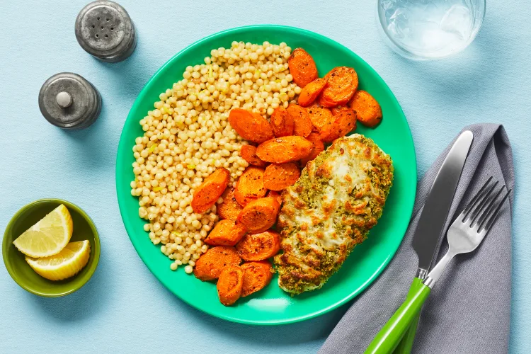

Home
Mozzarella & Herb Chicken

Description
Crunchy, panko-coated chicken flavored with mozzarella cheese and Italian
seasoning. Served with tender, roasted carrot slices and buttery,
lemon-zested couscous on the side.
5 minutes to prep; 25 minutes to cook.
Ingredients
- Lemon, 1
- Panko Breadcrumbs, 1/4 cup
- Mozzarella Cheese, 1/2 cup
- Italian Seasoning, 1 Tbsp
- Chicken Cutlets, 10 oz
- Sour Cream, 2 Tbsp
- Carrots, 12 oz
- Israeli Couscous, 2.5 oz
- Chicken Stock Concentrate, 1 Tbsp
- Chili Flakes, 1 tsp
- Olive Oil, 4 tsp
- Butter, 2 Tbsp
- Salt
- Pepper
Steps
-
Adjust rack to top position and preheat oven to 425 degrees. Wash and
dry produce. Trim, peel, and cut carrots on a diagonal into
1/2-inch-thick pieces. Zest and quarter lemon.
-
In a medium bowl, combine panko, mozzarella, 1 tsp Italian Seasoning, 1
TBSP olive oil, salt, and pepper. Toss carrots on one side of a baking
sheet with a drizzle of olive oil, salt, pepper, and a pinch of chili
flakes to taste. Roast on top rack for 5 minutes (you'll add the chicken
to the baking sheet then).
-
Pat chicken dry with paper towels; season all over with salt and pepper.
Evenly spread sour cream onto tops of chicken, then mound with panko
mixture, pressing firmly to adhere (no need to coat the undersides).
-
Once carrots have roasted 5 minutes, remove sheet from oven and
carefully place chicken on empty side. Roast on top rack until chicken
is golden brown and cooked through and carrots are browned and tender,
15-20 minutes. TIP: If carrots are done before chicken, remove from oven
and continue roasting chicken.
-
While carrots and chicken roast, melt 1 TBSP butter in a small pot over
medium-high heat. Add couscous and a pinch of salt. Cook, stirring,
until toasted, 2-3 minutes. Add 3/4 cup water and stock concentrate.
Bring to a boil, then cover and reduce to a low simmer. Cook until
couscous is tender, 6-8 minutes. Turn off heat. Drain any excess liquid
if necessary.
-
Once chicken is done, stir 1 TBSP butter into couscous until melted.
Stir in lemon zest and lemon juice to taste; season with salt and
pepper. Divide couscous, chicken, and carrots between plates. Serve with
any remaining lemon wedges on the side.